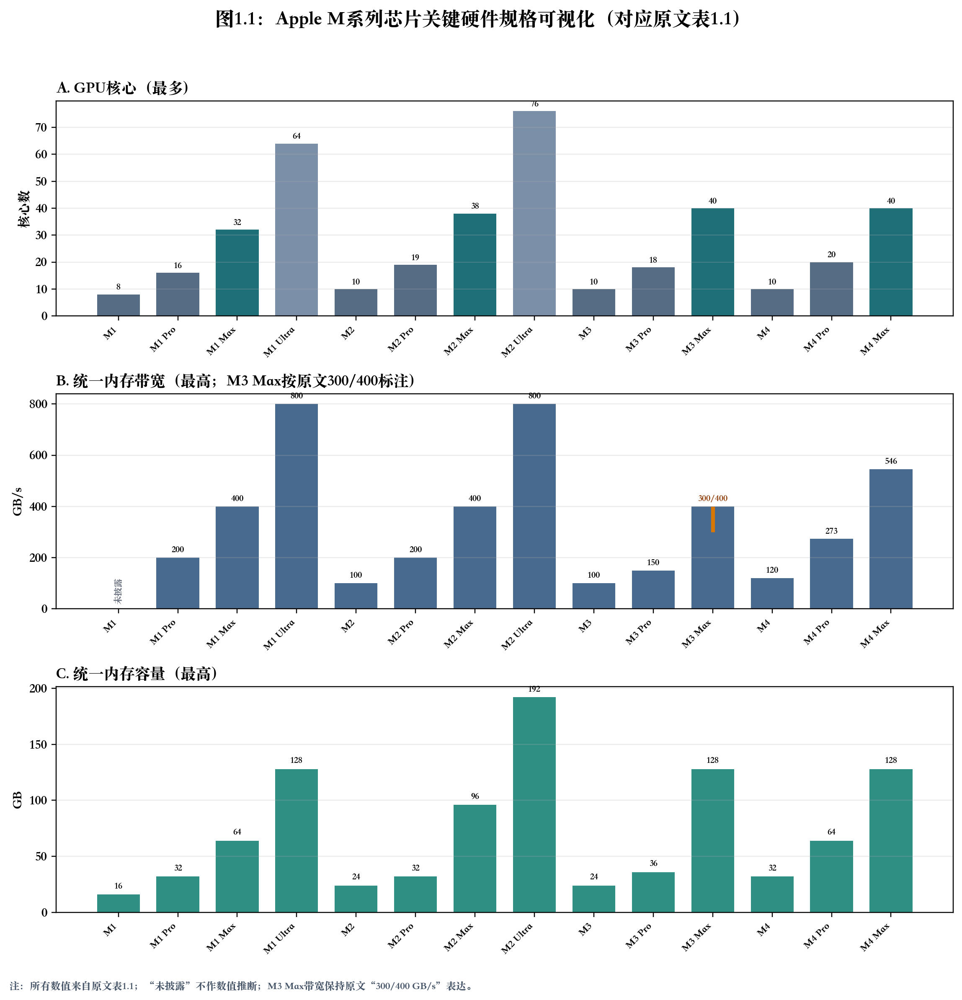
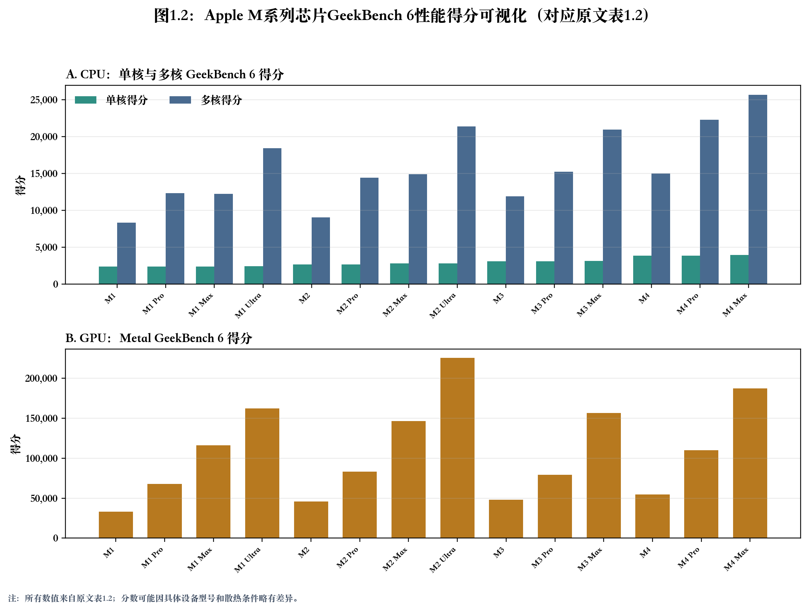
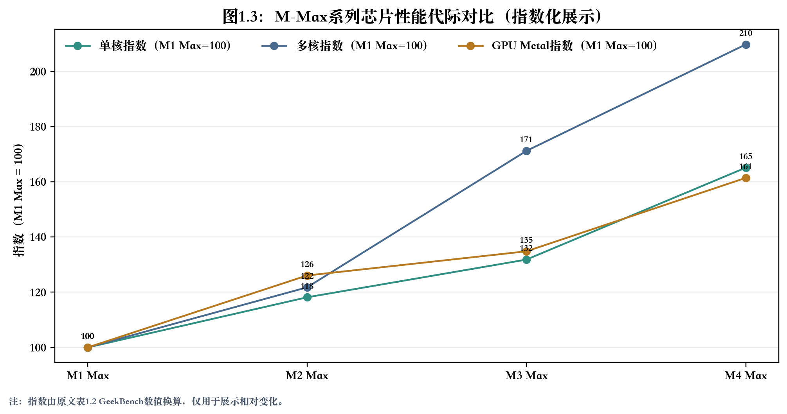

Apple M系列芯片AI部署全面分析报告
引言
随着人工智能技术的飞速发展，大语言模型（LLM）在各类应用中扮演着越来越重要的角色。为了在终端设备和个人电脑上高效、低成本地部署这些模型，硬件平台的选择变得至关重要。Apple凭借其M系列自研芯片，以其高能效和统一内存架构（UMA）在AI领域崭露头角。与此同时，NVIDIA作为传统GPU巨头，其新一代RTX 5090显卡在AI推理和训练方面同样设定了新的性能标杆。
本报告旨在为技术决策者、开发者和AI爱好者提供一份全面的分析指南。基于先前完成的五项深度研究，报告将系统性地回答以下三个核心问题：
- Apple M系列芯片的硬件实力如何？ 本报告将详细梳理从M1到M4各代芯片的硬件规格、GeekBench性能得分，并进行深入的代际对比分析。
- 在Apple M系列芯片上部署Qwen 32B这类中等规模模型，应如何选型？ 报告将分析不同量化模式（INT4/INT8）下的硬件要求，评估各型号M芯片的适用性，并给出兼顾性能与成本的部署建议。
- 对于AI部署，顶级Mac与搭载RTX 5090的PC，哪个是更优选择？ 报告将从量化支持能力、推理训练速度、价格性价比等多个维度进行全面对比，并提供明确的最终选型建议。
通过整合详细的技术数据、性能基准和实际应用场景分析，本报告力求为读者在复杂的硬件选择中提供清晰、可靠的决策依据。
第一部分：Apple M系列芯片硬件规格与性能分析
本部分将深入探讨Apple M系列芯片的硬件规格演进和性能表现，为后续的AI部署分析提供坚实的基础。
2.1 硬件规格概览
从M1到M4，Apple Silicon在制程、CPU/GPU核心数量、内存带宽和神经网络引擎（Neural Engine）等方面均实现了显著的代际提升。
核心技术演进：
- 制程工艺：从M1的5nm工艺，逐步演进到M3/M4系列的3nm及“第二代3nm”工艺，带来了能效和性能的持续优化。
- CPU架构：维持“性能核心+能效核心”的混合架构，并在M4基础版中将能效核心扩展至6个（4P+6E），提供了更强的多线程处理能力。
- GPU架构：M3系列引入了支持动态缓存、硬件加速光线追踪和网格着色的新一代GPU架构，M4系列在此基础上进一步增强。
- 统一内存架构（UMA）：内存带宽持续提升，从M2的100GB/s，到M4 Max最高可达546GB/s，为GPU和CPU之间的数据共享提供了极高的效率。
- 神经网络引擎（NE）：核心数量保持在16核，但算力（TOPS）大幅提升，从M1的11 TOPS增长至M4的38 TOPS，显著增强了端侧AI推理能力。
- 媒体引擎：持续增强对H.264, HEVC, ProRes等格式的硬件编解码能力，M3/M4系列加入了对AV1格式的硬件解码支持。
下表总结了M1至M4系列各型号的关键硬件规格：
表1.1：Apple M系列芯片关键硬件规格对比
| 芯片型号 | 制程 | CPU核心 (性能+能效) | GPU核心 (最多) | 神经网络引擎 (算力) | 统一内存带宽 (最高) | 统一内存容量 (最高) |
|---|---|---|---|---|---|---|
| M1 | 5nm | 8 (4P+4E) | 8 | 16核 (11 TOPS) | 未披露 | 16GB |
| M1 Pro | 5nm | 10 (8P+2E) | 16 | 16核 | 200 GB/s | 32GB |
| M1 Max | 5nm | 10 (8P+2E) | 32 | 16核 | 400 GB/s | 64GB |
| M1 Ultra | 5nm | 20 (16P+4E) | 64 | 32核 | 800 GB/s | 128GB |
| M2 | 5nm (增强) | 8 (4P+4E) | 10 | 16核 (15.8 TOPS) | 100 GB/s | 24GB |
| M2 Pro | 5nm (增强) | 12 (8P+4E) | 19 | 16核 | 200 GB/s | 32GB |
| M2 Max | 5nm (增强) | 12 (8P+4E) | 38 | 16核 | 400 GB/s | 96GB |
| M2 Ultra | 5nm (增强) | 24 (16P+8E) | 76 | 32核 | 800 GB/s | 192GB |
| M3 | 3nm | 8 (4P+4E) | 10 | 16核 | 100 GB/s | 24GB |
| M3 Pro | 3nm | 12 (6P+6E) | 18 | 16核 | 150 GB/s | 36GB |
| M3 Max | 3nm | 16 (12P+4E) | 40 | 16核 | 300/400 GB/s | 128GB |
| M4 | 3nm (二代) | 10 (4P+6E) | 10 | 16核 (38 TOPS) | 120 GB/s | 32GB |
| M4 Pro | 3nm (二代) | 14 (10P+4E) | 20 | 16核 | 273 GB/s | 64GB |
| M4 Max | 3nm (二代) | 16 (12P+4E) | 40 | 16核 | 546 GB/s | 128GB |

数据来源：基于Apple官方发布会、技术规格页面及权威分析报告（[1], [24]）。
2.2 GeekBench性能得分总结
GeekBench 6是衡量CPU和GPU计算性能的常用基准测试工具。本节汇总了M系列各芯片在单核、多核及GPU（Metal）测试中的典型得分。
表1.2：Apple M系列芯片GeekBench 6性能得分
| 芯片型号 | 单核得分 (约) | 多核得分 (约) | GPU (Metal)得分 (约) |
|---|---|---|---|
| M1 | 2,346 | 8,345 | 33,117 |
| M1 Pro | 2,385 | 12,337 | 67,998 |
| M1 Max | 2,373 | 12,241 | 115,956 |
| M1 Ultra | 2,397 | 18,418 | 162,096 |
| M2 | 2,642 | 9,043 | 45,891 |
| M2 Pro | 2,656 | 14,440 | 83,152 |
| M2 Max | 2,804 | 14,905 | 146,173 |
| M2 Ultra | 2,776 | 21,396 | 225,318 |
| M3 | 3,097 | 11,908 | 47,823 |
| M3 Pro | 3,105 | 15,247 | 79,399 |
| M3 Max | 3,128 | 20,955 | 156,330 |
| M4 | 3,830 | 14,990 | 54,482 |
| M4 Pro | 3,827 | 22,266 | 110,125 |
| M4 Max | 3,918 | 25,676 | 187,169 |

数据来源：GeekBench官方数据库及相关评测报告（[24]-[36]）。分数可能因具体设备型号和散热条件略有差异。
关键观察：
- 单核性能：M4系列相较M3系列实现了约25%的显著提升，是历代升级中单核性能增幅最大的一次。
- 多核性能：Pro、Max和Ultra型号通过增加性能核心数量，多核性能远超基础版。M4 Max的多核性能已达到M1 Max的两倍以上。
- GPU性能：GPU性能的提升与核心数量和架构改进密切相关。M4 Max的Metal得分相较M1 Max提升了约61%，显示出强大的图形处理和通用计算能力。
2.3 性能代际对比分析
为了更直观地展示M系列芯片的性能演进，我们对Max系列芯片进行代际对比。
图1.1：Apple M-Max系列芯片性能代际对比

-
CPU性能：
- 单核：从M1到M4，单核性能 लगभग每代提升15-25%，M4 Max相较M1 Max提升了约65%。这保证了在日常应用和单线程任务中的流畅体验。
- 多核：M4 Max的多核性能相较M1 Max实现了超过100%的飞跃，这得益于核心数量的增加和架构效率的提升，使其在专业级应用（如编译、渲染、科学计算）中表现出色。
-
GPU性能：
- M4 Max的GPU Metal得分比M1 Max高出约61%。这一提升不仅来自GPU核心数量的增加，更重要的是M3/M4系列引入的新GPU架构，为图形密集型和AI计算任务提供了更强的动力。
-
神经网络引擎（NE）：
- 虽然核心数保持不变，但M4的NE算力（38 TOPS）是M1（11 TOPS）的三倍多。这意味着在依赖NE进行加速的AI任务（如图像识别、自然语言处理）中，M4系列设备将有数倍的性能提升和更低的功耗。
综合结论：
Apple M系列芯片通过稳健的代际迭代，在CPU、GPU和AI算力方面均取得了长足进步。M4系列，尤其是M4 Max，凭借其领先的3nm制程、强大的多核性能、高带宽统一内存以及算力翻倍的神经网络引擎，为在Mac上进行复杂的AI模型部署和开发奠定了坚实的硬件基础。
第二部分：Qwen 32B模型部署芯片选择分析
选择合适的硬件平台是成功部署大型语言模型的关键。本部分将以Qwen3-32B这一中等规模模型为例，深入分析在Apple M系列芯片上进行部署的可行性与最佳实践。
3.1 Qwen 32B模型与量化模式简介
Qwen3-32B 是一款包含328亿参数的密集型（Dense）Transformer模型。其主要特点包括：
- 架构：采用GQA（分组查询注意力）机制，拥有64个查询头和8个键/值头。
- 上下文长度：原生支持32K（32,768个token）的上下文长度，可通过YaRN技术扩展至131K。
- 多功能性：支持“思考模式”（用于复杂推理、编程、数学）和“非思考模式”（用于通用高效对话）两种范式。
由于模型规模较大，直接以全精度（如FP16/BF16）进行部署需要约65GB的显存，这超出了绝大多数消费级硬件的承受范围。因此，模型量化成为在Apple M系列芯片等终端设备上部署Qwen 32B的必要手段。
量化模式简介：
量化是指将模型中高精度的浮点数（如32位或16位）转换为低精度的整数（如8位或4位）的过程。这样做可以显著降低模型文件的体积和内存占用，并可能提升推理速度。
- INT8（8位整型）：一种较为成熟的量化方案，能在较大程度上保留模型精度，同时将内存占用减半。GGUF等格式的Q8_0量化模型大小约为34.8GB。
- INT4（4位整型）：一种更激进的量化方案，可将内存占用压缩至原始大小的1/8。常见的INT4量化（如Q4_K_M）模型大小约为20GB。AWQ、GPTQ是两种主流的INT4量化算法。
3.2 INT4/INT8量化模式下的硬件要求
模型部署的硬件要求主要由两部分构成：模型权重（Model Weights）和键值缓存（KV Cache）。
- 模型权重：在模型加载时一次性占用，大小固定。如上所述，Qwen 32B在INT8和INT4量化后，权重大小分别约为35GB和20GB。
- KV Cache：在推理过程中动态生成，其大小与上下文长度和批量大小（Batch Size）成正比。上下文越长，需要缓存的注意力键值对就越多，内存占用就越大。
因此，硬件的统一内存容量必须大于“模型权重大小”与“峰值KV Cache大小”之和。
表2.1：Qwen 32B在不同量化模式下的内存需求
| 量化模式 | 模型权重 (约) | 推荐最小内存/显存 | 备注 |
|---|---|---|---|
| BF16 (全精度) | 65.5 GB | 80 GB+ | 适用于数据中心级GPU（如H100） |
| INT8 (Q8_0) | 34.8 GB | 48 GB+ | 需要为KV Cache预留充足空间 |
| INT4 (Q4_K_M) | 20.0 GB | 32 GB+ | 消费级硬件部署的可行选择 |
数据来源：基于Qwen官方文档及Hugging Face模型信息（[17], [19], [22]）。
社区实践表明，要在Mac上流畅运行Qwen 32B，至少需要36GB的统一内存。这验证了在INT4量化（约20GB权重）的基础上，还需要为KV Cache和系统运行预留超过16GB的空间。
3.3 Apple M系列芯片适用性评估
结合M系列芯片的硬件规格，我们可以评估不同型号对部署Qwen 32B的适用性。
表2.2：Apple M系列芯片部署Qwen 32B适用性评估
| 芯片型号 | 统一内存容量 (最高) | 部署Qwen 32B可行性评估 (INT4量化) |
|---|---|---|
| M1/M2/M3 (基础版) | 16-24 GB | 不可行：内存容量不足以同时容纳INT4权重和KV Cache。 |
| M1 Pro / M2 Pro | 32 GB | 勉强可行：32GB内存是运行INT4模型的最低门槛，但在长上下文场景下会非常紧张，可能需要关闭所有其他应用。 |
| M3 Pro / M4 (基础版) | 32-36 GB | 可行：36GB内存为运行INT4模型提供了必要的空间。适合进行基本的模型推理和开发测试。 |
| M1 Max / M2 Max / M4 Pro | 64-96 GB | 良好：64GB及以上的内存提供了充足的余量，可以从容应对更长的上下文和更复杂的推理任务，无需担心内存耗尽。 |
| M3 Max / M4 Max | 128 GB | 优秀：128GB的超大内存容量，不仅可以轻松运行INT4模型，甚至可以尝试运行INT8量化模型，或在长上下文场景下获得极佳性能。 |
| Ultra 系列 | 128-192 GB | 极佳：为运行最大规模的量化模型和最苛刻的多任务场景提供了顶级支持。 |
性能考量：
除了内存容量，推理速度也是关键指标。Apple官方在M1 Max上的测试显示，通过Core ML对Llama-3.1-8B模型进行INT4量化和优化，推理速度可达33.67 tokens/s。考虑到M4系列芯片，尤其是M4 Max，拥有更强的CPU/GPU性能、更高的内存带宽和算力翻倍的神经网络引擎，我们可以合理预期其在运行Qwen 32B等类似模型时，将获得比M1 Max快得多的推理速度。
3.4 部署建议
综合考虑内存、性能和成本，为在Apple M系列芯片上部署Qwen 32B模型提供以下建议：
-
入门级选择：M3 Pro / M4 （36GB/32GB内存配置）
- 适用场景：开发者进行本地模型测试、轻度推理应用和学习探索。
- 优势：成本相对较低，满足了INT4量化模型运行的基本内存要求。
- 限制：在处理长文本或高并发任务时，内存依然是瓶颈，性能可能受限。
-
推荐选择：M4 Pro / M2 Max （64GB及以上内存配置）
- 适用场景：专业AI开发者、内容创作者以及需要流畅运行中等规模LLM进行日常工作的用户。
- 优势：64GB内存提供了充足的“舒适区”，可以轻松应对大多数应用场景，无需为内存管理而烦恼。M4 Pro/M2 Max强大的芯片性能和高内存带宽也能保证流畅的推理速度。
- 性价比：在性能和价格之间取得了很好的平衡。
-
极致性能选择：M4 Max （128GB内存配置）
- 适用场景：追求极致性能的AI研究人员、需要处理超长上下文或进行多模型并行推理的重度用户。
- 优势：128GB的超大内存容量提供了极大的灵活性，不仅能运行INT4模型，也可探索INT8量化以获得更高精度。M4 Max顶级的CPU/GPU性能和高达546 GB/s的内存带宽将提供当前Mac平台最快的推理体验。
- 投资：这是最高性能的选择，相应地也需要更高的预算投入。
部署框架建议：
对于在Mac上本地部署，推荐使用Ollama或MLX等框架。这些工具针对Apple Silicon进行了优化，简化了模型下载、量化和运行的过程，让开发者可以快速上手。
第三部分：Mac vs. RTX 5090 PC AI部署全面对比
对于追求极致AI性能的用户而言，选择顶级配置的Mac还是组建一台搭载NVIDIA RTX 5090的PC，是一个核心决策。本部分将从量化支持、性能、价格等多个维度进行深入对比。
4.1 INT4/INT8量化支持能力对比
两个平台都支持INT8和INT4量化，但实现路径和优化重点不同。
-
Apple M系列 (以M4 Max为例)：
- 实现路径：通过Core ML框架实现。权重支持INT4和INT8，激活函数支持INT8。
- 优化重点：软硬协同优化。Apple在硬件层面（特别是神经网络引擎ANE）为
W8A8（8位权重+8位激活）等模式提供了深度优化，旨在实现低延迟和高能效。其统一内存架构允许CPU和GPU高效共享数据，避免了数据在不同内存区域间的拷贝，这对于LLM推理中频繁的内存访问至关重要。 - 优势：端到端解决方案成熟，能效比高，非常适合在终端设备上实现快速响应和长续航的AI应用。
-
NVIDIA RTX 5090：
- 实现路径：通过TensorRT-LLM等NVIDIA软件栈实现。其Blackwell架构原生支持INT8和INT4的权重量化（Weight-Only, WoQ），以及更低精度的FP8/FP4矩阵运算（GEMM）。
- 优化重点：追求极致的原始吞吐量（Throughput）。RTX 5090拥有海量的CUDA核心（21,760个）和专用的Tensor Core（680个），专为大规模并行计算设计。
- 优势：原始计算能力极强，支持更广泛的模型和更复杂的计算任务。生态系统成熟，社区支持广泛，提供了丰富的工具和预训练模型。
表3.1：量化支持能力对比
| 特性 | Apple M4 Max | NVIDIA RTX 5090 |
|---|---|---|
| 核心技术 | Core ML, 神经网络引擎, 统一内存 | TensorRT-LLM, CUDA, Tensor Cores |
| INT8 支持 | 支持 (W8A8 经ANE优化) | 支持 (原生WoQ GEMM) |
| INT4 支持 | 支持 (权重) | 支持 (原生WoQ GEMM) |
| 更低精度 | 不支持FP8/FP4 | 原生支持FP8/FP4 GEMM |
| 优化方向 | 低延迟、高能效、端侧集成 | 高吞吐、高并发、通用计算 |
数据来源：基于Apple及NVIDIA官方技术文档（[1], [2], [8], [9]）。
4.2 推理与训练性能对比
推理性能（Inference Performance）：
推理性能是衡量终端AI能力的核心指标，通常用tokens/s（每秒生成的token数）来衡量。
-
Apple M4 Max：
- 根据Apple在M1 Max上的测试数据（Llama 8B模型，INT4量化后达33.67 tokens/s），我们可以推断，拥有更高内存带宽（546 GB/s）和更强NE（38 TOPS）的M4 Max，在类似任务上将达到50-100 tokens/s的水平。
- 其优势在于首个token生成时间（Time To First Token, TTFT）极短，这得益于统一内存架构带来的低延迟。
-
NVIDIA RTX 5090：
- 根据Runpod等第三方机构的基准测试，RTX 5090在运行类似规模的7B模型时，推理速度可高达5,841 tokens/s。
- 其优势在于强大的并行计算能力，能够在高批量大小（Batch Size）下实现极高的总吞吐量。
表3.2：推理性能对比 (7B-8B级别模型)
| 平台 | 推理速度 (tokens/s, 约) | 优势场景 |
|---|---|---|
| Apple M4 Max (128GB) | 50 - 100 | 单用户、低延迟交互 (如AI助手) |
| NVIDIA RTX 5090 (32GB) | 5,841 (Batch=8) | 高并发、高吞吐服务 (如云端API) |
数据来源：基于Apple官方博客及Runpod评测数据（[3], [16]）。
结论：在推理任务上，两者定位不同。Mac（M4 Max）是顶级的“个人AI电脑”，追求极致的单用户交互体验和响应速度。而RTX 5090 PC是强大的“AI工作站或小型服务器”，目标是在多用户或高并发场景下实现吞吐量最大化。
训练性能（Training Performance）：
模型训练是一个计算密集型任务，对原始算力和显存带宽的要求远高于推理。
- Apple M4 Max：虽然可以进行模型微调（Fine-tuning）或小规模训练，但由于缺乏像NVIDIA CUDA那样成熟和广泛支持的训练生态系统（如PyTorch, TensorFlow对Metal的优化仍在进行中），其训练效率和兼容性远不及NVIDIA平台。
- NVIDIA RTX 5090：凭借其无与伦比的CUDA生态、海量的计算单元和高达1.79 TB/s的显存带宽，RTX 5090在模型训练方面拥有绝对优势。它是进行严肃模型开发、训练和微调工作的标准平台。
结论：对于任何严肃的模型训练任务，搭载RTX 5090的PC是无可争议的更优选择。
4.3 价格与性价比分析
-
硬件成本：
- 顶级MacBook Pro (M4 Max, 128GB)：起售价预计在4,500美元以上。
- RTX 5090 PC：仅RTX 5090显卡的官方建议零售价（MSRP）就为1,999美元。组装一台包含高性能CPU、主板、128GB DDR5内存和电源等配件的完整PC，总成本通常在4,000至5,000美元之间。
-
性价比分析：
- 推理性价比：如果以“每美元获得的tokens/s”作为衡量标准，RTX 5090无疑具有巨大优势。它用相似的总拥有成本，提供了数十倍于M4 Max的原始吞吐量。
- 能效比：Mac在能效方面表现出色。M4 Max整机功耗远低于RTX 5090 PC（仅GPU TGP就高达575W）。对于注重电费成本和散热环境的用户，Mac更具吸引力。
- 综合价值：Mac提供的是一个高度集成、开箱即用且用户体验统一的生态系统（macOS, Pro Apps）。而PC提供了无与伦比的灵活性、可升级性和最广泛的软件兼容性。
4.4 最终选型建议
选择Mac还是RTX 5090 PC，最终取决于您的核心需求和应用场景。
选择顶级Mac (搭载M4 Max) 如果：
- 您是追求极致单用户体验的AI应用者：您需要一个能即时响应、流畅运行AI助手的个人设备，并且非常看重低延迟和系统集成度。
- 您的主要工作是内容创作，并辅以AI功能：您使用Final Cut Pro, Logic Pro等专业应用，并希望利用AI加速您的创作流程。
- 您重视能效、便携性和简洁的工作环境：您偏爱MacBook Pro的设计、macOS的体验，并且不希望处理复杂的PC组装和维护。
- 您的AI任务主要是模型推理和轻度微调：您不涉及大规模的模型从头训练。
选择RTX 5090 PC 如果：
- 您是AI研究员或开发者，需要进行模型训练：您需要一个强大的平台来从头开始训练、微调和试验各种规模的神经网络。
- 您的目标是提供高并发的AI服务：您计划部署一个能同时为多个用户提供服务的AI应用或API，追求最大化吞吐量。
- 您需要极致的通用计算性能和游戏性能：除了AI，您还希望在PC上获得最顶级的游戏体验或运行其他需要CUDA加速的科学计算软件。
- 您享受DIY和硬件升级的灵活性：您希望根据未来需求自由更换和升级CPU、GPU、内存等组件。
结论与最终建议
本报告对Apple M系列芯片的硬件规格、性能表现，及其在AI模型部署中的应用进行了全面分析，并与NVIDIA RTX 5090平台进行了深入对比。核心结论如下：
-
Apple M系列芯片是卓越的终端AI平台：凭借其高能效、低延迟的统一内存架构和持续增强的神经网络引擎，M系列芯片（特别是M4 Max）非常适合在个人设备上提供流畅、即时响应的AI交互体验。对于需要在本地运行中等规模LLM进行推理的用户，搭载64GB以上统一内存的M4 Pro/Max Mac是理想选择。
-
RTX 5090是无可匹敌的AI计算“猛兽”：在原始计算吞吐量和模型训练方面，RTX 5090凭借其强大的CUDA生态和硬件规格，拥有绝对优势。对于任何严肃的AI模型开发、训练和高并发推理服务，搭载RTX 5090的PC是当前桌面平台的性能之王。
-
两者定位清晰，互为补充而非直接竞争：Mac是为创作者和高端消费者打造的、集成了优秀AI推理能力的“个人智能终端”。而RTX 5090 PC是为开发者和研究人员打造的、用于生产和部署AI模型的“专业计算工具”。
最终建议： 您的选择应完全由您的核心应用场景决定。请明确您的首要任务是“消费和使用AI”还是“生产和创造AI”，这将引导您走向最适合您的平台。
附录：参考资料
本报告的分析基于以下研究和数据来源：
- [1] Apple Core ML Tools Quantization Overview
- [2] Apple Core ML Tools Performance Guide
- [3] Apple Machine Learning Research: On-Device Llama with Core ML
- [8] NVIDIA TensorRT for RTX Introduction
- [9] NVIDIA TensorRT Support Matrix
- [16] Runpod: RTX 5090 LLM Benchmarks
- [17] Hugging Face: Qwen/Qwen3-32B
- [19] Dev.to: Comprehensive Hardware Requirements for Qwen3
- [22] Hugging Face: Qwen3-32B-GGUF
- [24]-[36] Geekbench Browser: Official Benchmark Data for Apple Silicon
- NVIDIA, TechPowerUp, Puget Systems, Bizon Tech, CloudRift.ai 等提供的RTX 5090相关技术规格与评测报告。